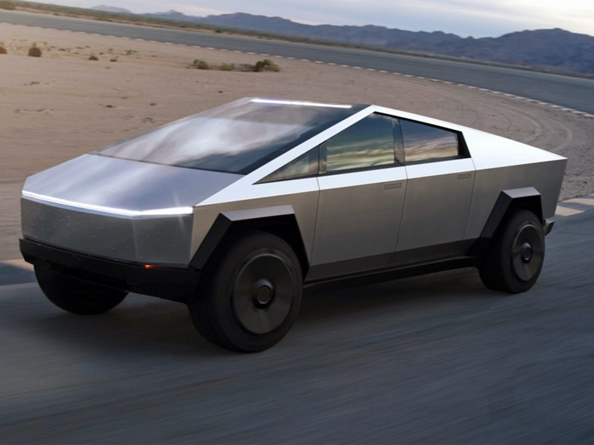

AMD için beklenen özellik geliyor!
Nvidia‘nın kullanıcılara ışın izleme teknolojisi yani Ray Tracing özelliğini sunmasıyla birlikte, AMD ile Nvidia arasındaki rekabet kızıştı. Birçok oyun sever tarafından da oldukça beğenilen Ray Tracing AMD ekran kartları için geliyor.devamını gör...

4D Mikroskoptan Alınan İnanılmaz Görüntüler, Moleküler Yapıları Sanata Dönüştürüyor
Günümüzde birçok mikroskop bulunuyor. Oldukça gelişmiş teknolojiler ile çalışan araştırmacılar yine de molekülleri istenilen netlikte göremeyebiliyor.devamını gör...

Google Stadia uygulaması Play Store’da yayınlandı
Google'ın bulut üzerinden AAA oyunları oynamaya imkan sağlayacak abonelik hizmeti Stadia, 19 Kasım'da resmen kullanıma açılacak. Hizmetin Android uygulaması ise bugün kullanıcılara sunuldu.devamını gör...
Tesla Cybertruck elektrikli pickup, ilginç tasarımı ve 800 km menziliyle geldi
Merakla beklenen Tesla Cybertruck elektrikli pickup sonunda tanıtıldı. Kaliforniya’da düzenlenen özel bir etkinlikte tanıtılan Tesla Cybertruck, sahip olduğu ilginç tasarımla herkesi şaşırtmayı başardı.Paslanmaz çelikten üretilen gövdesi ve köşeli tasarımıyla dikkat çeken Tesla Cybertruck’ın uzunluğu 5,885 mm, genişliği 2,027 mm, yüksekliği ise 1,905 mm. Bu da onu ABD’nin çok sevilen pickup modeli Ford F-150 kadar büyük bir araç haline getiriyor.
6 kişiye ev sahipliği yapacak kadar büyük bir kabine sahip olan Tesla Cybertruck’ın yaşam alanı oldukça sade. Her birinde üçer koltuk bulunan iki sıralı düzen, konsolun merkezinde büyük bir multimedya ekranı ve F1 araçlarını anımsatan bir direksiyon mevcut. Tabii bu direksiyonun üretim versiyonunda yerini daha geleneksel bir parçaya bırakması mümkün görünüyor.

Üç farklı versiyonla gelecek
Tesla Cybertruck’ın tek motorlu, iki motorlu ve üç motorlu olmak üzere farklı versiyonları mevcut. Söz konusu versiyonlardaki motor ve bataryaların detaylı teknik verileri henüz açıklanmadı. Fakat serinin en üstündeki versiyonda Plaid adı verilen 3 motorlu yerleşimin kullanılacağı, toplamda 800 beygir güç ve 1360 Nm tork üreteceği düşünülüyor.Dört tekerlekten çekiş sistemine sahip olan versiyon, 2.9 saniyelik 0-100 km/s hızlanmasıyla spor otomobillere meydan okuyor. Çeyrek mil süresi 10.8 saniye olarak açıklanan “Tri Motor” ismindeki versiyonun 800 km’den fazla sürüş menziline sahip olacağı ve maksimum 210 km/s sürat yapabileceği belirtildi.
Hakkımızda
Güncel olmayan teknoloji haberleri sunan amatör bir web sitesi.